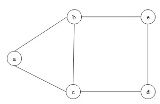

Introduction
Graph theory is a core area of discrete mathematics that studies graphs - mathematical
structures consisting of vertices and the edges that connect them. At its heart, a graph captures the idea of
relationship: whenever objects are linked by some pairwise connection, a graph provides the natural abstraction.
This simple idea turns out to be extraordinarily powerful.
On the theoretical side, graph theory supplies rigorous frameworks for understanding connectivity, cycles, network flows,
and structural decomposition, offering deep insight into the organization of complex systems. On the practical side, graphs
model relationships in social networks, optimize routing and logistics, drive recommendation engines, and form the backbone
of modern graph neural networks and knowledge graphs in machine learning.
Graph
We begin with the most fundamental object of study. A graph formalizes the idea of a collection of objects
(vertices) together with pairwise connections (edges) between them.
Definition: Graph
A graph is an ordered pair \(G = (V, E)\), where \(V\) is a set of vertices
(or nodes), and \(E\) is a set of edges, each of which connects a pair of vertices.
We write \(V(G)\) for the vertex set and \(E(G)\) for the edge set of \(G\).
In most cases, we assume graphs are finite, though infinite graphs do arise in certain theoretical contexts.
The order of \(G\) is the number of its vertices:
\[
|G| = |V(G)|.
\]
Similarly, \(|E(G)|\) denotes the number of edges, sometimes called the size of \(G\).
A vertex \(v\) is incident with an edge \(e\) if \(v \in e\); we then say that \(e\) is an
edge at \(v\). The two vertices incident with an edge are its ends, and an edge
joins its ends. For brevity, an edge \(\{x, y\} \in E(G)\) is typically written as \(xy \in E(G)\),
where \(x, y \in V(G)\).
The definition above describes the simplest type of graph - an undirected, simple graph.
In practice, several important variants arise depending on how edges are defined:
- Undirected graph:
Each edge has no direction and simply connects two distinct vertices. Formally, edges are unordered pairs:
\[
E \subseteq \binom{V}{2}.
\]
Unless stated otherwise, "graph" in this page means an undirected simple graph.
- Directed graph (digraph):
Each edge (often called an arc) has a direction, pointing from one vertex to another.
Formally, edges are ordered pairs:
\[
E \subseteq V \times V.
\]
- Weighted graph:
Each edge carries a numerical value (a "weight"), often representing cost, distance, or strength of connection.
A weighted graph is represented as
\[
G = (V, E, w),
\]
where \(w: E \to \mathbb{R}\) is a weight function. Weighted graphs are fundamental in shortest-path algorithms
and network optimization.
- Multigraph:
Multiple edges are allowed between the same pair of vertices. A multigraph is represented as
\[
G = (V, E, \mu),
\]
where \(\mu: E \to \mathbb{N}\) assigns a multiplicity to each edge, indicating how many parallel
edges exist between two vertices.
We next turn to the local structure around each vertex - the concept of adjacency and neighborhoods.
Neighbors
The notion of adjacency — which vertices are directly connected — is the most basic local property of a graph.
From adjacency, we derive neighborhoods, independence, and edge-counting between vertex subsets.
Definition: Adjacency and Neighborhood
Two vertices \(x, y \in V(G)\) are adjacent (or neighbors) if
\(xy \in E(G)\). The neighborhood of a vertex \(x\) is the set
\[
N_G(x) = \{ y \in V(G) : xy \in E(G) \},
\]
often written simply as \(N(x)\) when the graph \(G\) is clear from context.
Definition: Complete Graph
A graph \(G\) is complete if every pair of distinct vertices is adjacent.
The complete graph on \(n\) vertices is denoted \(K_n\). For example, \(K_3\) is the triangle.
Similarly, two edges \(e \neq f\) are adjacent if they share a common endpoint.
A set of vertices (or edges) is called independent if no two of its elements are adjacent.
It is often useful to count edges within and between subsets of vertices. For any subset
\(A \subseteq V(G)\), we define \(e(A)\) as the number of edges with both endpoints in \(A\).
More generally, given two subsets \(A, B \subseteq V(G)\), we define
\[
e(A, B) = |\{ (a, b) \in A \times B : ab \in E(G) \}|.
\]
Since this counts ordered pairs, each edge with one endpoint in \(A\) and one in \(B\)
contributes 1 if the sets are disjoint, but an edge with both endpoints in \(A \cap B\) is counted twice.
When \(A\) and \(B\) are disjoint, \(e(A, B)\) simply counts the edges crossing between the two parts -
a quantity central to the study of bipartite graphs and graph cuts.
Adjacency tells us which vertices are connected. The natural next question is: how many connections
does each vertex have? This leads us to the concept of degree.
Degrees
The degree of a vertex quantifies how "connected" it is within the graph. This simple count turns out to be
one of the most informative local invariants, and leads immediately to a fundamental identity — the Handshaking Lemma —
that constrains the global structure of any graph.
Definition: Degree
For a simple graph \(G\), the degree of a vertex \(x\) is the number of its neighbors:
\[
\deg_G(x) = |N_G(x)|,
\]
written simply as \(\deg(x)\) when \(G\) is understood. For directed graphs, we distinguish the
in-degree \(\deg^-(x)\) (the number of edges directed into \(x\)) and the
out-degree \(\deg^+(x)\) (the number of edges directed out of \(x\)).
The minimum degree and maximum degree of \(G\) are denoted respectively by
\[
\delta(G) = \min_{x \in V} \deg(x), \qquad \Delta(G) = \max_{x \in V} \deg(x).
\]
The average degree of \(G\), written \(d(G)\), satisfies the natural inequality
\[
\delta(G) \leq d(G) \leq \Delta(G).
\]
If every vertex of \(G\) has the same degree \(k\), the graph is said to be \(k\)-regular.
For example, the complete graph \(K_n\) is \((n-1)\)-regular.
Proposition: Handshaking Lemma
For any graph \(G = (V, E)\),
\[
\sum_{x \in V} \deg(x) = 2|E|.
\]
The idea is simple: each edge \(xy\) contributes exactly 1 to \(\deg(x)\) and 1 to \(\deg(y)\),
so summing all degrees counts every edge twice.
Defining \(\varepsilon(G) = |E|/|V|\), the number of edges per vertex, we can rewrite the
Handshaking Lemma as
\[
d(G) = \frac{1}{|V|}\sum_{x \in V}\deg(x) = \frac{2|E|}{|V|} = 2\,\varepsilon(G).
\]
This identity connects the average degree to the edge density and will reappear when we study
the graph Laplacian.
Insight: Vertex Degree in Graph-Based ML
Vertex degree is more than a counting tool - it is a first-order structural feature that pervades graph-based machine learning.
The degree matrix \(D\), with \(D_{ii} = \deg(v_i)\), is a building block of both the
graph Laplacian \(L = D - A\) and its normalized variants used in
spectral clustering. In Graph Neural Networks (GNNs),
the degree appears explicitly in the normalization factor \(D^{-1/2}AD^{-1/2}\) that prevents high-degree "hub" nodes from dominating the
message-passing aggregation. Even the simple degree sequence of a graph can serve as a powerful feature for graph classification tasks.
Degree is an example of a graph invariant - a quantity preserved by isomorphism.
This observation leads naturally to the question: when should two graphs be considered "the same"?
Isomorphism
Two graphs may look different when drawn on paper yet have identical structure.
Isomorphism makes this idea precise: two graphs are "the same" if we can relabel
the vertices of one to obtain the other, preserving all edge relationships.
Definition: Graph Isomorphism
Two graphs \(G = (V, E)\) and \(G' = (V', E')\) are isomorphic, written
\(G \simeq G'\), if there exists a bijection \(\varphi: V \to V'\) such that
\[
\forall\, x, y \in V, \quad xy \in E \iff \varphi(x)\varphi(y) \in E'.
\]
Such a map \(\varphi\) is called an isomorphism. An isomorphism from \(G\) to itself
(i.e., \(G = G'\)) is called an automorphism.
Note that the condition is a biconditional (\(\iff\)): \(\varphi\) must preserve edges and non-edges.
A bijection that maps edges to edges but creates spurious new edges is not an isomorphism.
Isomorphism naturally gives rise to two important concepts:
-
A graph property is a class of graphs that is closed under isomorphism.
For example, "containing a triangle" (i.e., having a cycle of length 3) is a graph property:
if \(G\) contains a triangle, then so does every graph isomorphic to \(G\).
-
A graph invariant is a function \(f\) defined on graphs such that
\(G \simeq G'\) implies \(f(G) = f(G')\). The number of vertices, the number of edges, and
the degree sequence are all graph invariants. Invariants are the primary tool for proving
that two graphs are not isomorphic: if any invariant differs, the graphs cannot be isomorphic.
Subgraphs
Just as subsets and subspaces play a central role in set theory and linear algebra, subgraphs allow us
to study the local and partial structure of a graph. We first note that set-theoretic operations extend naturally to graphs.
Given two graphs \(G = (V, E)\) and \(G' = (V', E')\), we define
\[
G \cup G' = (V \cup V',\, E \cup E'), \qquad G \cap G' = (V \cap V',\, E \cap E').
\]
If \(V \cap V' = \emptyset\) (and hence \(E \cap E' = \emptyset\)), the graphs are said to be disjoint.
Definition: Bipartite Graph
A graph \(G = (V, E)\) is bipartite if its vertex set can be partitioned into two disjoint sets
\(U\) and \(W\) such that
\[
V = U \cup W, \quad U \cap W = \emptyset, \quad E \subseteq \{\,uw : u \in U,\, w \in W\,\}.
\]
That is, every edge connects a vertex in \(U\) to a vertex in \(W\); no edge joins two vertices within the same part.
Bipartite graphs arise naturally in matching problems (e.g., assigning jobs to applicants) and are
characterized by the absence of odd-length cycles — a fact we will encounter in later discussions.
When we delete a vertex \(v\) from \(G\), we remove \(v\) and all edges incident to it.
We write \(G - v\) for the resulting graph.
Definition: Subgraph, Induced Subgraph, and Spanning Subgraph
Let \(G = (V, E)\) and \(G' = (V', E')\) be graphs.
-
\(G'\) is a subgraph of \(G\) (written \(G' \subseteq G\)) if \(V' \subseteq V\) and \(E' \subseteq E\).
In this case, \(G\) is a supergraph of \(G'\).
-
\(G'\) is an induced subgraph of \(G\) if \(G' \subseteq G\) and \(G'\) contains
every edge of \(G\) whose both endpoints lie in \(V'\):
\[
G' = G[V'] = \bigl(V',\; \{xy \in E : x, y \in V'\}\bigr).
\]
-
\(G'\) is a spanning subgraph of \(G\) if \(V' = V\), that is, \(G'\) has the same vertex set
as \(G\) but possibly fewer edges.
The distinction between a general subgraph and an induced subgraph is important: a subgraph may omit edges
between vertices it retains, while an induced subgraph must include all such edges.
We will see a concrete example illustrating this distinction at the end of this page.
Finally, a graph \(G\) is said to be edge-maximal with respect to a given graph property
if \(G\) has the property, but adding any new edge between non-adjacent vertices destroys it. That is,
\(G + xy\) fails to have the property for every pair of non-adjacent vertices \(x, y \in V(G)\).
Subgraphs describe the "parts" of a graph. We now turn to the structures that describe
how to traverse a graph - paths and cycles.
Paths & Cycles
Paths and cycles are arguably the most fundamental structures in graph theory. A path captures the idea
of "getting from \(A\) to \(B\) without repeating vertices," while a cycle represents a closed traversal.
Together, they underpin connectivity, shortest-path algorithms, and the classification of graphs by their cycle structure.
Definition: Path
A path is a non-empty graph \(P = (V, E)\) of the form
\[
V = \{x_0, x_1, x_2, \ldots, x_k\}, \quad E = \{x_0 x_1,\, x_1 x_2,\, \ldots,\, x_{k-1} x_k\},
\]
where all vertices \(x_0, x_1, \ldots, x_k\) are distinct. The vertices \(x_0\) and \(x_k\) are the
ends of \(P\); the remaining vertices are its inner vertices.
The length of a path is its number of edges.
By convention, \(P_k\) denotes the path on \(k\) vertices (and hence \(k - 1\) edges).
For example, \(P_4\) has 4 vertices and 3 edges.
(Note: In some literature, the index \(k\) refers to the path's length (number of edges).
We consistently use the vertex-count convention here.)
Definition: Cycle
For \(k \geq 3\), if \(P = x_0 x_1 \cdots x_{k-1}\) is a path on \(k\) vertices, then the graph obtained
by adding the edge \(x_{k-1} x_0\) is called a \(k\)-cycle, denoted \(C_k\).
A \(k\)-cycle has \(k\) vertices and \(k\) edges.
For example, \(C_3\) is a triangle (3 vertices, 3 edges), and \(C_4\) is a square (4 vertices, 4 edges).
Definition: Acyclic Graph (Forest and Tree)
A graph that contains no cycle is called acyclic (or a forest).
A connected acyclic graph is called a tree. A tree \(T\) on \(n\) vertices has exactly
\(n - 1\) edges, and there is a unique path between any pair of vertices.
Trees are among the most ubiquitous structures in both mathematics and computer science — from parse trees
in compilers to decision trees in machine learning. We will study trees in greater depth in future pages, including
their role in Eulerian and Hamiltonian theory
and spanning tree algorithms.
Paths, Cycles, and Trees in CS and ML
These three structures are foundation of algorithmic graph theory. Shortest paths
(Dijkstra's algorithm, Bellman-Ford) power routing in networks and are the foundation of
graph distance metrics used in node embedding methods like DeepWalk.
Cycle detection determines whether a graph is a tree or a DAG (directed acyclic graph),
which is critical in dependency resolution, topological sorting, and the structure of Bayesian networks.
Trees themselves underlie decision trees, random forests, and hierarchical clustering,
while spanning trees provide the minimal connected substructure of a graph -
the starting point for Kruskal's and Prim's algorithms in network design.
Example: Cycle & Induced Subgraph
Consider the following graph:

Its vertex set and edge set are as follows:
\[
V = \{a, b, c, d, e\}, \quad E = \{ab, ac, bc, be, cd, de\}
\]
If we delete the vertex \(a\), and remove all edges incident to the vertex \(a\), we obtain a subgraph
\(G' =(V', E')\) such that
\[
V' = \{b, c, d, e\}, \quad E'= \{bc, be, cd, de\}.
\]
Since \(G' = G[\{b,c,d,e\}]\) includes all edges of \(G\) with both endpoints in \(\{b,c,d,e\}\),
it is an induced subgraph. Moreover, \(G'\) is itself a 4-cycle \(C_4\).
On the other hand, we can see the 5-cycle in \(G\). (Say, \(a \to c \to d \to e \to b \to a\).) This is
also a subgraph of \(G\) but NOT an induced subgraph. Let this subgraph be \(G'' =(V'', E'')\) such that
\[
V'' = \{a, b, c, d, e\}, \quad E'' = \{ab, ac, be, cd, de\}.
\]
In this case, we just removed an edge \(bc\) from \(G\). This does not meet the definition of the induced
subgraph.